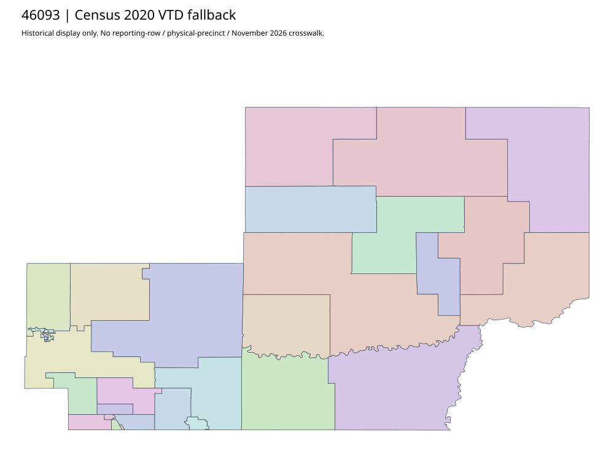

304 ordered indexMeade | 46093
Official elections parent links acquired complete Meade County and Sturgis precinct PDFs. GIS landing is a separate source. PDF precinct labels and source dates do not approve matching the2024 workbook rows or absentee group; no vector precision is inferred from PDFs.
13 priority / 41 full historical observations. Parent is a summary ancestor, not additive to leaves. No physical feature matches or current reporting crosswalk approved.
Acquired shared-parent assets
map-46093-47dbc7cf6656 | complete1-page PDF; all-page contact sheet; complete page1; complete original gzip. Exact reconstruction: python -B scripts/reconstruct.py --id map-46093-47dbc7cf6656 /private/tmp/map.pdf
map-46093-b2fbb800ae41 | complete1-page PDF; all-page contact sheet; complete page1; complete original gzip. Exact reconstruction: python -B scripts/reconstruct.py --id map-46093-b2fbb800ae41 /private/tmp/map.pdf
Census2020 fallback
37 native historical VTD features. Entire785-feature ZIP original retained once, all66 counties. Yankton has one countywide VTD. No current/reporting allocation. complete original gzip

Full binary/attribute/geometry QA
Observed authority/acquisition routes
Complete SOS authority fields including original blank/masked values: parent inventory. No contacts were sent.
Ordered full children
- SUMMERSET #10 | 1208 source votes | priority
- SOUTHEAST PIEDMONT #13 | 1030 source votes | priority
- PIEDMONT CENTRAL #11A | 849 source votes | priority
- CENTRAL BLACK HAWK #19 | 845 source votes | priority
- TILFORD #6 | 811 source votes | priority
- NORTHEAST PIEDMONT #12 | 810 source votes | priority
- EAST ELK VALE #21A | 642 source votes | priority
- BASE #23 | 634 source votes | priority
- SOUTHEAST STURGIS #2 | 569 source votes | priority
- RURAL STURGIS #7 | 562 source votes | priority
- NORTHWEST STURGIS #5 | 520 source votes | priority
- PIEDMONT WEST #11 | 497 source votes | priority
- RURAL BLACK HAWK #15 | 466 source votes | priority
- EAST PIEDMONT #12A | 424 source votes | remainder
- HARMONY #8 | 403 source votes | remainder
- SOUTH STURGIS #2A | 401 source votes | remainder
- WEST BLACK HAWK #16 | 360 source votes | remainder
- BLACK HAWK #14 | 357 source votes | remainder
- SOUTHWEST STURGIS #4A | 313 source votes | remainder
- EAST STURGIS #1 | 295 source votes | remainder
- CENTRAL STURGIS #3 | 276 source votes | remainder
- WEST ELK VALE #24 | 264 source votes | remainder
- FAITH #31 | 258 source votes | remainder
- STURGIS #5A | 243 source votes | remainder
- WEST STURGIS #4 | 208 source votes | remainder
- NORTHEAST STURGIS #1-A | 176 source votes | remainder
- BEAR BUTTE #9 | 172 source votes | remainder
- ALKALI #6A | 168 source votes | remainder
- CHALK BUTTE #27 | 124 source votes | remainder
- VIEWFIELD #17 | 114 source votes | remainder
- ELM SPRINGS #18 | 95 source votes | remainder
- PINE #33 | 87 source votes | remainder
- RED OWL #30 | 83 source votes | remainder
- ELK VALE #21 | 81 source votes | remainder
- HEREFORD #20 | 62 source votes | remainder
- MARCUS #41 | 54 source votes | remainder
- SULPHUR #35 | 50 source votes | remainder
- WHITE OWL #25 | 49 source votes | remainder
- FAIRPOINT #29 | 37 source votes | remainder
- FORT MEADE #1A | 35 source votes | remainder
- UNION #40 | 32 source votes | remainder